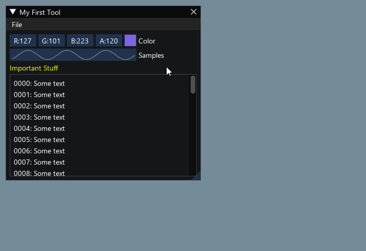

Retained and immediate UI#
This page describes specifics and differences of retained and immediate mode UIs, and how the latter was adopted to AUI.
Retained Mode UI#
Retained Mode UI is the traditional approach to building user interfaces that most developers are familiar with. In this model, UI elements are created and persist in memory as a tree or graph structure. Think of it like arranging furniture in a room - once you place the elements, they stay there until explicitly moved or removed.
class MainWindow: public AWindow {
public:
MainWindow() {
setContents(Centered {
// pain point: has to set initial value
// pain point: has to use scary statements
// instead of invoking a contract that
// explicitly describes what the view
// expects to receive and give
mButton = _new<AButton>("0") AUI_LET {
connect(it->clicked, me::increase);
},
});
}
void increase() {
// pain point: has to manually maintain view's
// state
// pain point: has to somehow put together
// business logic and UI state updates
mButton->setText("{}"_format(++mCounter));
}
private:
_<AButton> mButton;
int mCounter = 0;
};
When you create a button or a window in retained mode, it continues to exist even when not visible, maintaining its state, properties, and position. This approach is what powers most desktop applications, web browsers, and mobile apps. Systems like Qt Widgets, GTK, Swing, WinAPI, or the HTML DOM are classic examples of retained mode UIs.
Immediate Mode UI#
Immediate Mode UI takes a radically different approach. Instead of maintaining persistent UI elements, it rebuilds the entire interface from scratch every frame. Imagine having to redraw everything on a whiteboard multiple times per second - that's essentially what immediate mode UI does.
This approach, popularized by libraries like Dear ImGui, is particularly prevalent in game development and debugging tools. The UI is described procedurally, with the application explicitly controlling the state. Rather than creating a button that persists in memory, you essentially say "draw a button here" every frame, and if it's clicked, react immediately.
// Create a window called "My First Tool", with a menu bar.
ImGui::Begin("My First Tool", &my_tool_active, ImGuiWindowFlags_MenuBar);
if (ImGui::BeginMenuBar())
{
if (ImGui::BeginMenu("File"))
{
if (ImGui::MenuItem("Open..", "Ctrl+O")) { /* Do stuff */ }
if (ImGui::MenuItem("Save", "Ctrl+S")) { /* Do stuff */ }
if (ImGui::MenuItem("Close", "Ctrl+W")) { my_tool_active = false; }
ImGui::EndMenu();
}
ImGui::EndMenuBar();
}
// Edit a color stored as 4 floats
ImGui::ColorEdit4("Color", my_color);
// Generate samples and plot them
float samples[100];
for (int n = 0; n < 100; n++)
samples[n] = sinf(n * 0.2f + ImGui::GetTime() * 1.5f);
ImGui::PlotLines("Samples", samples, 100);
// Display contents in a scrolling region
ImGui::TextColored(ImVec4(1,1,0,1), "Important Stuff");
ImGui::BeginChild("Scrolling");
for (int n = 0; n < 50; n++)
ImGui::Text("%04d: Some text", n);
ImGui::EndChild();
ImGui::End();

This approach is convenient for dynamic interfaces, at the cost of reevaluating layout each frame and drawing everything from scratch.
Practical Implications#
Immediate mode UI can't be really used in most applications due to high resource consumption, especially on mobile platforms. However, the expressiveness and stateless approach give significant benefits in terms of software development speed.
Modern UI frameworks (SwiftUI, QML, Jetpack Compose, including AUI) actually represent a hybrid approach that blends concepts from both retained and immediate mode UIs. They're often called "declarative UI frameworks".
These frameworks create what appears to be an immediate-mode-like developer experience while maintaining retained-mode-like performance benefits.
With declarative syntax, the code style feels similar to immediate mode - you describe what you want the UI to look like at the given moment, rather than how to change it.
class MainWindow: public AWindow {
public:
MainWindow() {
setContents(Centered {
// 1. you don't need to set the initial string "0"
Button {
.text = AUI_REACT("{}"_format(mCounter)),
.onClick = { me::increase },
},
});
}
void increase() {
// 2. the click handler was stripped down to
// "business logic" only, no explicit actions
// to UI.
++mCounter;
}
private:
AProperty<int> mCounter = 0;
};
Behind the scenes, these frameworks maintain a virtual representation of the UI (similar to retained mode) but update it efficiently through diffing algorithms. The visual representation is reevaluated only if the state is changed.
They use sophisticated state management systems that track dependencies and trigger recompositions only when needed. This is more efficient than pure immediate mode (which redraws everything) but more automated than traditional retained mode.
The key innovation is that they provide the mental model and simplicity of immediate mode while maintaining the performance benefits of retained mode. This is why they're often called "declarative UI frameworks" rather than being categorized as either retained or immediate mode.
AUI specifics#
AUI is historically a retained mode UI. However, it has adopted the "hybrid mode" concept. This is why most of AUI's views components provide "a traditional way", which consists of creating an object and maintaining its state manually via setters; and a "declarative way", which immediately describes the behavior and relationship of a view to the properties, the latter control the state.
In the examples above, we've used AButton for retained mode UI, and its declarative notation,
declarative::Button, which accepts properties to control it. The latter is a declarative contract.
|
The declarative contracts are implemented as C++ structures, taking advantage of C++20's aggregate initialization to provide a named-argument syntax. This makes the view's requirements and capabilities immediately obvious to developers while reducing the amount of boilerplate code needed to create and manage views.
AUI allows you to choose using between retained and declarative mode. Under the hood, both _new<AButton> and
declarative::Button evaluate to creating a new instance of _<AButton>, which allows you to fall back to retained
mode in declarative UIs if necessary. Due to growing expectations in regard to dynamism and responsiveness, we strongly
suggest using declarative mode only.
A good example for preferring retained mode to declarative is a simple text editor, where everything goes around of a single view.